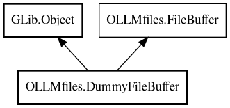

DummyFileBuffer
Object Hierarchy:

Description:
public class DummyFileBuffer :
Object,
FileBuffer
In-memory buffer implementation for non-GTK contexts (tools, CLI).
Uses in-memory string[] array for line cache. No GTK dependencies. Always reads from disk (no timestamp checking). No cursor/selection
support (returns defaults). sync_to_file() is not supported (throws IOError.NOT_SUPPORTED).
When to Use
Use DummyFileBuffer when:
- Working in non-GUI context (CLI tools, background processing)
- No GTK dependencies available
- Simple file read/write operations
- Line range extraction
- Batch file processing
Content:
Properties:
- public File file { get; set; }
Reference to the file this buffer represents.
- public bool is_loaded { get; set; }
Whether the buffer has been loaded with file content.
- public bool is_modified { get; set; }
Whether the buffer has unsaved modifications.
- public int64 last_read_timestamp { get; set; }
Get the timestamp when the buffer was last read from disk.
Creation methods:
Methods:
- public async void apply_edits (ArrayList<FileChange> changes) throws Error
Apply multiple edits to the buffer efficiently using in-memory lines
array.
- public void get_cursor (out int line, out int offset)
Get the current cursor position.
- public string get_line (int line)
Get the content of a specific line.
- public int get_line_count ()
Get the total number of lines in the buffer.
- public string get_selection (out int cursor_line, out int cursor_offset)
Get the currently selected text and cursor position.
- public string get_text (int start_line = 0, int end_line = -1)
Get text from buffer, optionally limited to a line range.
- public async string read_async () throws Error
Read file contents asynchronously.
- public async void sync_to_file () throws Error
Sync buffer contents to file on disk.
- public async void write (string contents) throws Error
Write contents to buffer and file.
Inherited Members:
All known members inherited from class GLib.Object
- @get
- @new
- @ref
- @set
- add_toggle_ref
- add_weak_pointer
- bind_property
- connect
- constructed
- disconnect
- dispose
- dup_data
- dup_qdata
- force_floating
- freeze_notify
- get_class
- get_data
- get_property
- get_qdata
- get_type
- getv
- interface_find_property
- interface_install_property
- interface_list_properties
- is_floating
- new_valist
- new_with_properties
- newv
- notify
- notify_property
- ref_count
- ref_sink
- remove_toggle_ref
- remove_weak_pointer
- replace_data
- replace_qdata
- set_data
- set_data_full
- set_property
- set_qdata
- set_qdata_full
- set_valist
- setv
- steal_data
- steal_qdata
- thaw_notify
- unref
- watch_closure
- weak_ref
- weak_unref
All known members inherited from interface OLLMfiles.FileBuffer